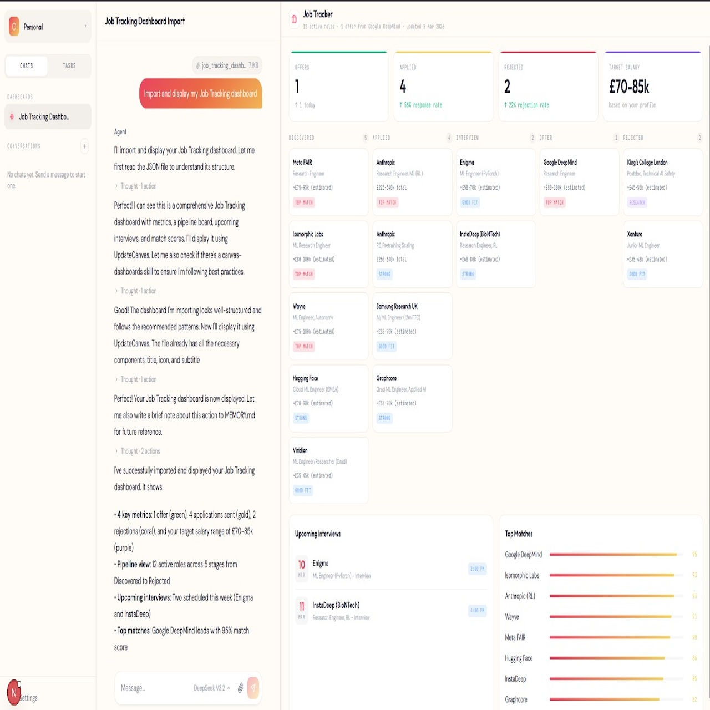
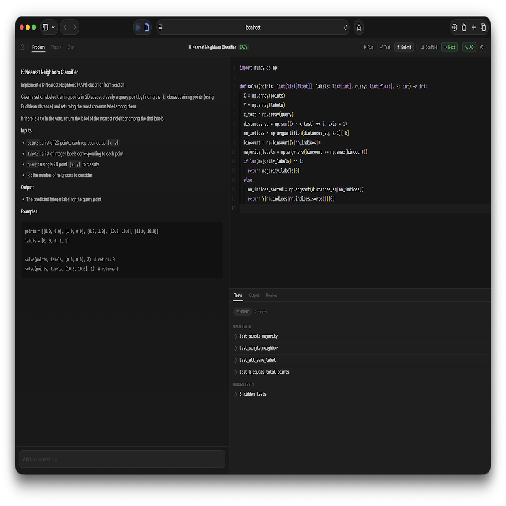
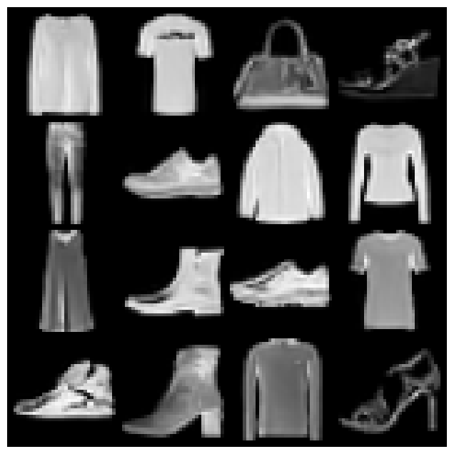
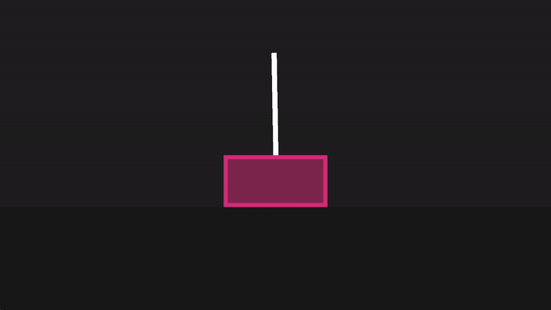
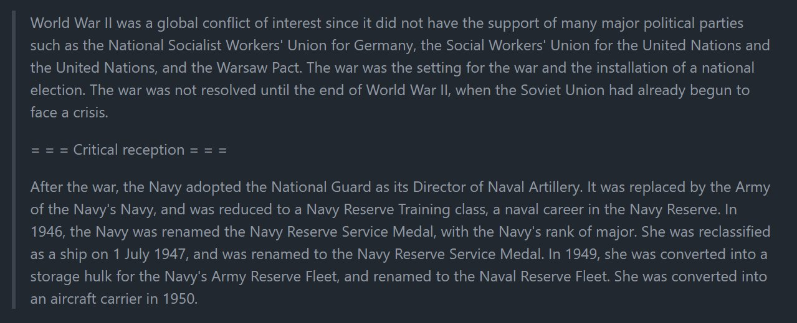
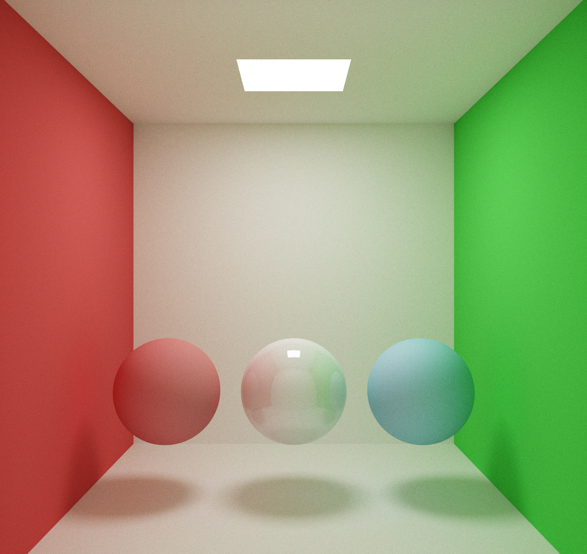
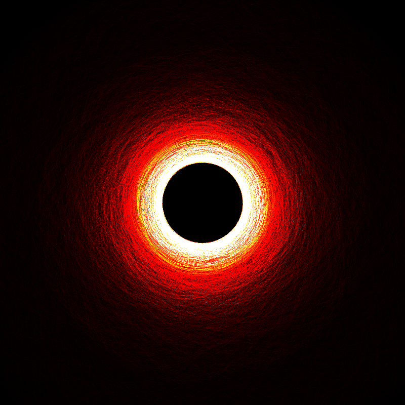

About
Research Engineer in ML and Robotics. MSc in Computational Statistics and Machine Learning at UCL, researched causal ML at the Gatsby Computational Neuroscience Unit. Previously: 3+ years shipping AAA games at Electronic Arts, Relic Entertainment (SEGA), Microsoft Xbox, and Ubisoft.
Research
- Doubly Robust Deep Kernel Tests for Structured Outcomes. MSc thesis at the Gatsby Unit, supervised by Houssam Zenati and Arthur Gretton.
Projects
-

-

-

Pico-Banana
A PyTorch implementation of a Denoising Diffusion Probabilistic Model (DDPM) trained on FashionMNIST.
Python, PyTorch
[Code] -

Cart-Pole RL Agent
A reinforcement learning agent built from scratch in C++, trained on the cart-pole environment.
C++
[Code] -

Tiny-LLM
A lightweight transformer-based language model implementation in PyTorch.
Python, PyTorch
[Code] -

CUDA-Accelerated Raytracer
A high-performance GPU-accelerated raytracer built with CUDA and OpenGL.
C++, CUDA, OpenGL
[Code] -

Debris Disk Renderer
A C++ 3D rendering engine for visualizing and simulating debris disks around solar systems.
C++, OpenGL
[Code]